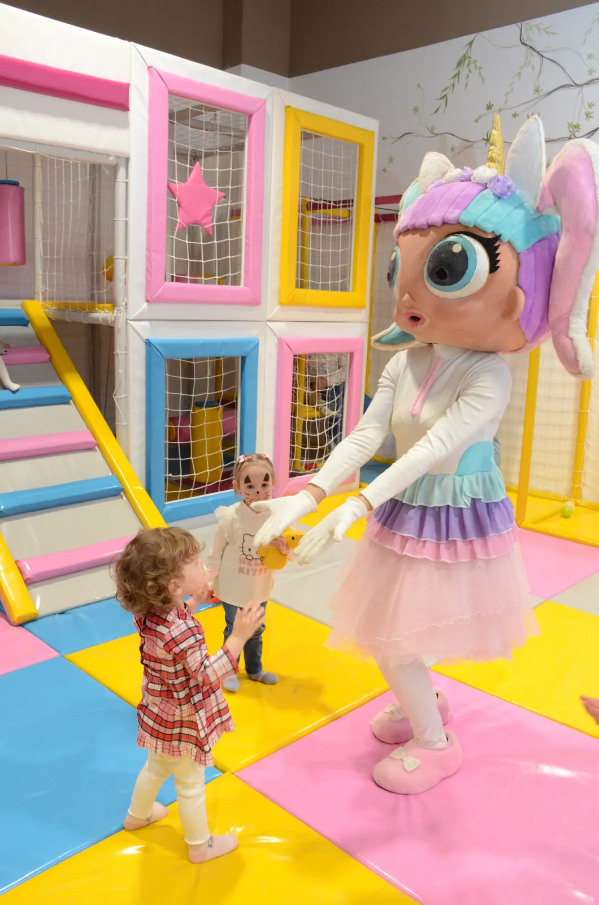

Blog · Igraonica
Igraonica za bebe i malu decu u Kragujevcu

Mnogi roditelji misle da je igraonica samo za decu koja već trče i penju se. Ali i bebe i mališani koji tek prohodavaju vole nove boje, oblike i drugu decu. Važno je samo da igraonica ima prostor napravljen baš za njih.
Zašto je bitan poseban bebi kutak
Starija deca su brza i glasna. Kada su bebe u istom prostoru sa njima, lako dođe do sudara i padova. Odvojen bebi kutak znači da najmlađi mogu mirno da puze, sede i istražuju, a da ih niko ne preskače.
Na šta da obratite pažnju
- Meke podloge po celom delu za bebe,
- igračke za uzrast: meke kocke, lopte, kuhinjice, bez sitnih delova,
- čistoća prostora i igračaka, jer bebe sve stavljaju u usta,
- nepušački i klimatizovan prostor,
- mesto za roditelje blizu, da možete biti uz bebu ili je gledati iz blizine.
Bebi kutak u Milutin i Milica
U našoj igraonici u TC Roda bebi kutak je odvojen deo sa mekim kockama, loptama, kuhinjicama i igračkama za najmlađe. Prostor je klimatizovan i nepušački, a ulaz je pristupačan i sa kolicima.
Dok se beba igra, vi možete da sedite u našem kafiću, uz kafu, na par koraka od nje. Igranje košta 450 dinara po satu, a radimo svakog dana od 09 do 21h.
Savet za prvi dolazak
Prvi put ostanite uz bebu dok se ne navikne na prostor i zvuke. Ponesite pelene, flašicu i rezervnu garderobu. Za sva pitanja o uzrastu pozovite nas pre dolaska.
Imate pitanje? Pozovite nas.
Igraonica i čuvaonica Milutin i Milica · TC Roda, 2. sprat · svakog dana 09–21h